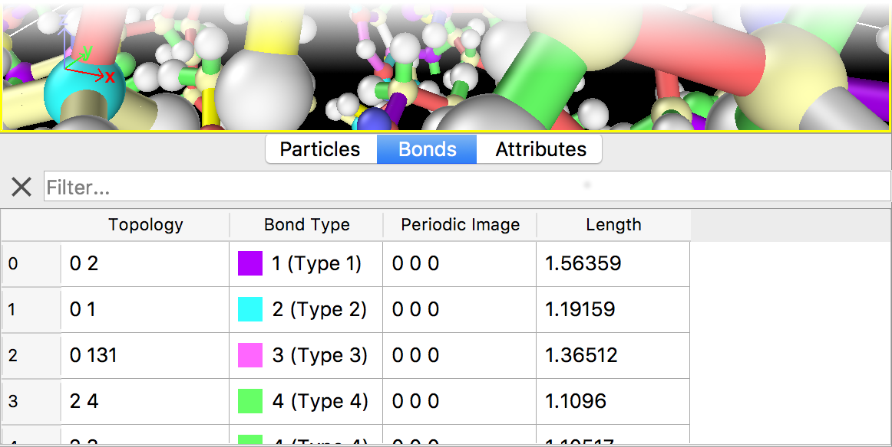

Bonds
{kind=link}
This page of the data inspector shows all bonds and their property values as a data table. The page appears only if the current dataset contains bonds.
You can dynamically filter the displayed list of bonds by entering a Boolean expression in the input field at the top of the table.
Consider, for example, the table shown in the screenshot: Here, the Compute property modifier
had been used to compute and assign the Length property to each bond (last table column).
To selectively list only very long bonds, let’s say longer than 1.5 Angstroms,
we can enter the expression Length > 1.5 into the filter field.
Multiple criteria can be combined using logical AND and OR operators. For a detailed description of the expression syntax,
see the Expression Selection modifier.
Use the X button to reset the filter and show the full list of bonds again.
The Topology bond property contains the indices of the two particles connected by a bond.
This information may be used to select the bonds connected to a particular particle. For example, to select all bonds adjacent to
the first particle (particle index 0), we could use the following filter expression:
Topology.A==0 || Topology.B==0